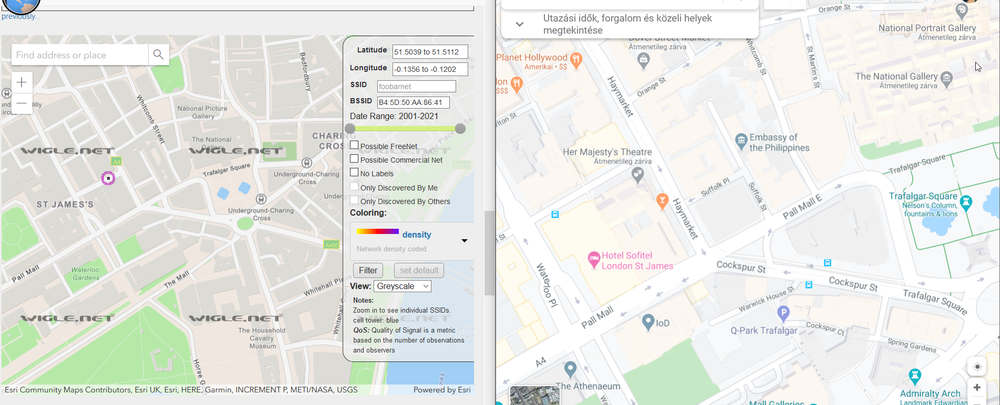

wigle.net let's us use the BSSID to find the location:
It's a location in London, near the Trafalgar Square

Google maps (on the right) can show us that it is roughly aroun the Her Majesty's Theater
We can even use Google Street view to view the approximate area:

It is somewhere near Charles II Street 71
Furthermore, wigle.net tells us this too: